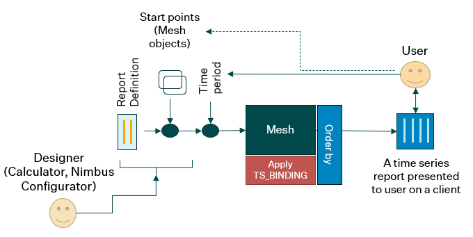

Mesh template reports
A time series report in Mesh context is based on a template definition. The Mesh model objects are the data providers.
The report definition uses Mesh model queries to find time series to include in an activated report presented to the user through a client user interface.
A report definition is currently stored in the Oracle database (table RC_SET ++) and is edited by the SmG Calculator application. The definition format is basically the same as for SmG time series reports that was introduced in the beginning of 90's. A report definition consists of the following sections:
- General report attribute/value pairs
- Column definitions with attribute/value pairs (also referred to as report items)
For each column definition there must be a reference to something that can provide time series data, i.e. a time series source.
In general, the following source types are available:
- Time series name or time series key (attribute DBI_KEY)
- Local time series expression (a block wrapped with #SLV_START ... ##SLV_END)
- Time series query (attribute TS_BINDING)
Mesh template reports only supports the TS_BINDING approach.
Mesh provides a generic report definition
The Mesh models are based on a domain description called Mesh model definition. It defines object types and value attributes on those, as well as attributes that describe how object types relate to other object types. A Mesh model consists of instances of available types and connections between them. Time series attribute definitions attached to an object type regulate which time series that are available on instances of that type. Such queries are expressed as the value of the TS_BINDING attribute in column definitions.
Mesh template report definitions may also refer to other attributes to be shown in, for example, the column header or to be used as a criterion for sort operations.
A report column definition in Mesh context may expand to multiple time series, whereas the SmG version provides a 1:1 ratio between column definition and time series to be included in the activated report. Whether to use the 1:1 approach or a more dynamic 1:n approach to get the report layout as you want it in Mesh, also depends on the power and flexibility of the order by feature. How to utilise order by to achieve a desired layout is discussed here.
Because the Mesh report can be applied at different starting points, it will increase efficiency/maintainability even when you create reports where each TS_BINDING maps to one time series.
Which time series become part of a report?
The column definition attribute named TS_BINDING is used to look up time series to be part of an activated report.
Some of the collected time series may not immediately appear in the visible view onto the report due to page configurations and hierarchical grouping.
There are also options to dynamically include more time series by retrieving series that are used to provide initial series through calculations.
Adding previous versions of initial series is another option to dynamically extend the report.
The TS_BINDING attribute value in Mesh context is associated with Mesh model instances storing time series. To describe where to look for time series, we use the Mesh model definition.
The TS_BINDING value is a query and not a fixed reference, and therefore, a template report will adapt to the current state of the Mesh model.
A query against a given Mesh model may result in zero, one or many time series. This dynamic behaviour also impact how other report attributes are defined, for instance by using macros that make the value of attributes adapt to the specific time series found. $OBJ_NAME is an example of such a macro and will expand to the name of the Mesh model object that owns the time series attribute.
Template report activation
A template report definition is based on a Mesh model definition but needs additional context to be activated:
- A Mesh model where there are instances of the object types found in the Mesh model definition
- A starting point definition
- A time period that defines which part of each time series that are read/calculated and visualised in the client that activated the report.
The starting point definition can be given in two ways:
- By the user in a Nimbus ad hoc report task
- View and select a Mesh object or multiple Mesh objects in a tree viewer
- View a list of available Mesh template reports that are relevant for selected Mesh object.
-
A report is activated when both Mesh start-point object(s) and report are selected
-
By the designer of a Nimbus Mesh task
- This is done from the Nimbus Configurator, allowing the designer to associate specific reports and starting points to be activated/viewed on certain areas of the Nimbus screen.
Note! Some Mesh template report definitions are designed to work with instances of a specific object type as starting point.
If the report is not associated with a specific object type, the report can be combined with any Mesh "node" object.
But, it will not necessarily resolve to any contents because the TS_BINDING queries may not find any time series when applied.

The figure above summarises the report activation process and the players involved. Some comments:
- To the left there is a "designer" that uses some tools to provide report definitions accessible for client user to the right
- The SmG Calculator is currently used to make and maintain report definitions
- The Nimbus Configurator is currently used to create Nimbus tasks where time series reports are a crucial part.
- The report definition contains one or more report column definitions, each having a TS_BINDING attribute that targets time series attributes in the Mesh model.
- At this stage the designer makes a choice whether this is a report definition that assumes the starting point is a specific Mesh object type or not.
- This choice affects how the TS_BINDING specifications are formulated.
- When configuring a Nimbus task, the designer must also define one or more starting points. This can be as generic as the Mesh model scope or it can be one or more specific Mesh objects explicitly identified or by a search expression.
- The user is able to select starting point(s) and time period from where the time series data is requested when using the Ad-hoc report.
Different time series data sources
From where time series data is retrieved is defined by the TS_BINDING attribute in a report definition. The value of a TS_BINDING attribute is a search specification that finds time series attributes in a Mesh model based on a starting point.
This dynamic expansion may end up at time series attributes having different scopes:
- It is attached to a physical time series, i.e. a time series stored in the database.
- There is a local calculation expression attached to this Mesh model object (instance).
- There is a calculation expression defined for this attribute definition, i.e. defined as part of Mesh model definition.
- There is none of the above data sources, but the
Session seriesfeature is activated. In this case, a temporary time series is created in memory (breakpoint resolution) with a session scope. Session scope means the time series will not be visible outside the current Mesh session.
The list above also describes the internal priority. For example:
- The values are retrieved from the physical time series even if there are a specific or general calculation expression available.
- A local expression (at instance) will be used instead of the general expression.